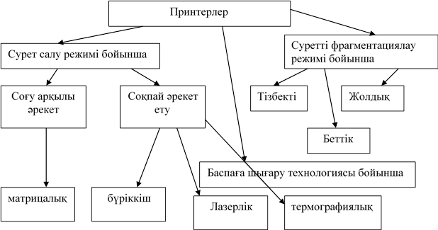
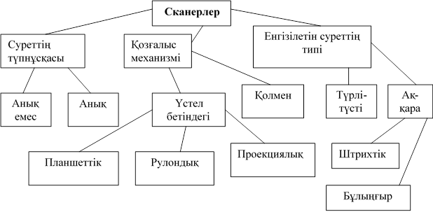

Көптеген компьютерлерде графикалық ақпаратты бейнелеудің растрлық тәсілі қабылданған, яғни сурет тікбұрышты нүктелер матрицасы түрінде беріледі, әрбір нүктенің берілген түстер жиынтығынан таңдалатын өзінің түсі болады.
Компьютерде графикалық ақпараттарды өз жадысына сақтауға арналған бейнеадаптер болады. Онда әрбір нүктеге жадыдан белгілі бір бит саны бөлінеді. Сонымен қатар бейнеадаптер монитор экранында бейнежадыны секундына 70-100 рет ұдайы көрсете алады.
Негізгі бейнеадаптерлерге:CGA (Color Graphics Adapter 320x200,1982), EGA (Enhancad Graphics Adapter 6400x350,1984), VGA (Video Graphics Array, 640x480), SVGA (Super Graphics Array,800x600 ден 1248x1024 дейін) және т.б. жатады.
Қазіргі кезде экранда 16 млн.түсті беретін VGA және SVGA бейнеадаптерлері кеңінен қолданылады.
Барлық бейнеадаптерлердің негізгі төрт бөлігі болады.
· жүйелік логикалық микросхемалар жинағы(бейнечип);
· жедел бейнежады (Video RAM)
· цифрлық аналогтық түрлендіргіш (ЦАТ)
· базалық енгізу-шығару жүйесі (BIOS)
Жүйелік логикалық микросхемалар жинағы – деректерді жедел бейнежадыға жазып, іс жүзінде экранда ақпараттың бейнелеуін басқарады.
Цифрлық аналогтық түрлендіргіш (ЦАТ)-жедел бейнежадыдағы ақпаратты оқиды да, оларды цифрлық түрден аналогтық мониторды басқару сигналдарына айналдырып, оны мониторға жібереді. Бұл операция секундына оншақты рет орындалады, ол экранның ауысу жиілігі деп аталады. Қазіргі кездегі эргономикалық талаптарға сай экранның ауысу жиілігі 85 Герцтен аспауы қажет.
Базалық енгізу-шығару жүйесі (BIOS) –енгізу/шығарудың негізгі программалар жиынтығынан тұрады, ол компьютер құрылғыларының арасындағы өзара әрекетті ұйымдастырады.
Мониторлар әдетте үш параметр, яғни дюмдегі диаганаль өлшемі, нүктені ажырату қабілеті және герцтегі қайталау жиілігі бойынша жіктеледі.
Монитордың ажырату қабілеттілігі мен қайталану жиілігі бейнеадаптердің мүмкіндігіне тәуелді.
Графикалық ақпараттармен жұмыс істеген кезде кем дегенде 17 дюмдік мониторды пайдаланған ыңғайлы.
Сонымен қатар, монитор кем дегенде 1208х1024 нүктені тануы керек, ал 1600х1200 болса одан да жақсы. Түстің тереңдігі ең аз дегенде 16 бит болуы керек, ал 32 бит болса одан да жақсы. Онда бір мезгілде 64 мың түстен 16 млнға дейінгі түстерді беруге болады. Компьюерде жұмыс істеген кезде көз шаршамас үшін оның алмасу жиілігі 85 Герцтен кем болмауы керек.
Суреттермен жұмыс істеуге арналған компьютерлердің жедел жадысы кем дегенде 128 Мбайт, қатты дискінің көлемі ең аз дегенде 20 Гбайттан кем болмауы керек.
Суреттермен жұмыс істеуге арналған қосымша құрылғылар
Принтерлер. Суреттің қағаздағы «қатты» көшірмесін алу үшін принтерлер мен плоттерлер қолданылады.
Кез келген принтер растрлық суретті құруды іске асырады, себебі ол нүктелерден тұратын символдарды шығарады. Принтерлерді былайша топтастыруға болады.

Суреттермен жұмыс істеген кезде матрицалық принтерлердің санасы өте төмен болғандықтан оны қолданбай-ақ қоюға болады. Ең жақсысы лазерлік принтерлер өте қымбат тұрады. Олардың бағасы – 2-3 мың долларға дейін барады.
Сурет принтердің
Сондықтан да графикалық ақпараттармен жұмыс істегенде түрлі-түсті бүріккіш принтерді қолданған тиімді. Оларды Canon, Epson Stylus, Hewlett Packard фирмалары жасап шығарады және олардың сапасы өте жақсы.
Сканерлер. Сканер – компьютерге мәтін, сурет, слайд, фотосурет түріндегі кескіндердің образдарын немесе басқа да графикалық ақпаратты енгізуге мүмкіндік беретін құрылғы. Сканерлердің өзіндік белгілеріне қарай былайша топтастыруға болады.

Графикалық жұмыстар үшін планшетті сканерді қолданған тиімді. Сканердің негізгі параметрі суреттің әрбір дюймінде танып, қабылдайтындай дюймдегі нүктелер санымен өлшенетін айыру қабілеті болып табылады. Сканердің айыру қабілеті 600х300-ден 1200х600-ге дейін және одан да жоғары болады.
Сканер компьютерге тізбектелген порт арқылы жалғанса, онда сканерден ақпарат алу өте баяу, ал USB интерфейсі арқылы қосылса, онда ақпарат алу жылдамырақ болады.
Цифрлық фотокамералар(ЦФК) – компьютердің көмегімен өңдеуге болатын кадрлар құруға мүмкіндік береді.
ЦФК – ның қарапайым фотокамерадан артықшылығы: онда фотопленканың орнына суреттерді электр сигналдарына айналдыратын жарық сезгіш элемент қолданылады. Сигналдар кодталғаннан кейін камераның жадысына жазылады. Оны кез келген уақытта компьютердің жадысына жазып, графикалық редактордың біреуінде өңдеп, бсапаға шығаруға болады. Қазіргі кезде түсірілген суреттің өлшемі 320х240 нүктеден бастап 2400х1600 нүктеге дейінгі фотокамералар қолданылады.
Бейнекамералар. Интернетте ақпарат алмасу үшін қарапайым және арзан бейнекамералар қолданылады. Оларды көбінесе web - камера деп атайды. Бұл камерада ақпаратты сақтау құрылғысы жоқ, ол тек бейнесигналды трансляция жасап, цифрлық формаға түрлендіреді. web – камераның көмегімен 640х480 нүктеден тұратын фотосуреттерді алуға болады. Бұл камералар компьютерге USB интерфейсі арқылы қосылады. Мұндай камераның мүмкіндігі шектеулі болғандықтан, суреттердің сапасы төмен болады.
Графикалық планшет. Ол – компьютерде сурет салуға арналған құрылғы. Графикалық планшеттің көмегімен кәдімгі қағазға салғандай сурет салуыңызға болады. Қарындаштың рөлін графикалық қылқалам атқарады. Графикалық қылқаламның мүмкіндігі жоғары, өйткені графикалық редактор оны қарындаш, бор, қылқалам немесе кез келген басқа сурет салатын құрал ретінде қабылдай алады. Ыңғайлы әрі сенімді графикалық планшеті Wacom фирмасы шығарады. Қылқаламның қоректендіру элементі мен жалғастыратын кабелі жоқ. Ол кәдімгі қаламға ұқсас. Оның бір ұшымен сурет салып, екінші ұшыменөшіргіш сияқты суреттің кез келген жерін өшіріп тастауға болады.
Үйдегі фотостудиялық құрылғылар
Цифрлық фототехниканың және онша қымбат емес түрлі түсті принтерлердің көмегімен әрбір адам өз үйінде компьютерлік фотостудия жасауына болады. Суреттерді компьютерлік сыртқы тасымалдаушыларда сақтап қана қоймай, оны өз қалауы бойынша өңдеуіне болады. Ол үшін ең MS Office пакетіне кіретін қарапайым Photo Editor атты программаны қолдана алады. Бұрын түсірілген суреттер компьютерге сканердің көмегімен енгізіледі. Мысалы Polaroid сияқты арнайы слайд-адаптері бар фотокамерадан суретті бірден компьютерге енгізуге болады. USB арқылы да цифрлық фотокамерадағы суреттерді компьютерге енгізуге болады. Суреттер компьютер жадысында орынды көп алатындықтан оларды сақтау үшін сыйымдылығы көп дискілер керек. Сондықтан да оны компакт-дискілерде сақтаған дұрыс. Сонымен қатар ақпаратты магниттік лентаға жазып, сақтауға арналған құрылғы стриммерлерде сақтауға болады.
Тек ғана жазуға арналған дискілер (CD-R) мен бірнеше рет жазып-өшіруге болатын дискілерді (CD-RW) қолдануға болады. Жұмыс істеу жылдамдығына байланысты дисководтар әр түрлі болады: мысалы CD-RW – 52/32/52 – дискіні 52000 жылдамдықпен айналдырады, дискіні 32000 жылдамдықпен жазады, 52000 жылдамдықпен қайта оқиды.
Бақылау сұрақтары:
1.Компьютерлік графика қандай түрлерге бөлінеді?
2.Векторлық графика деп қандай графиканы айтамыз?
3.Растрліқ графика деп қандай графиканы айтамыз?
4.Фрактальдық графика мысалдарын келтіріңіз.